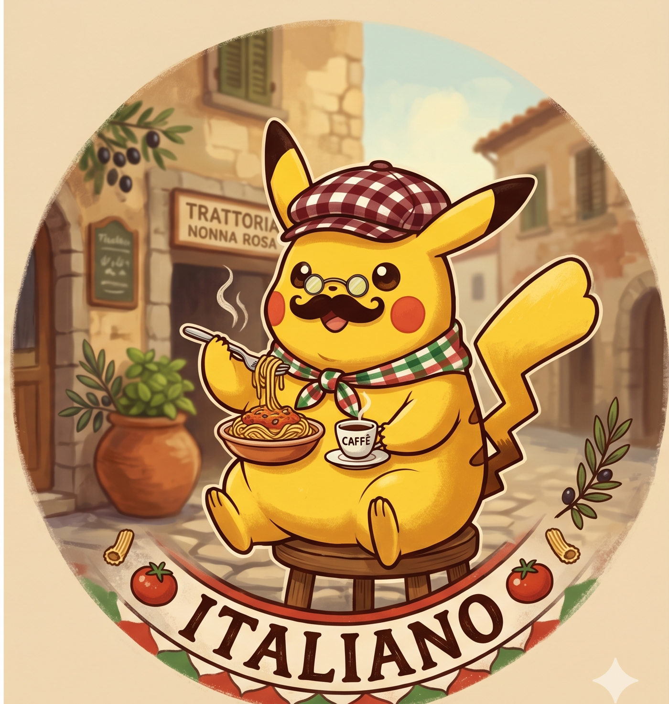
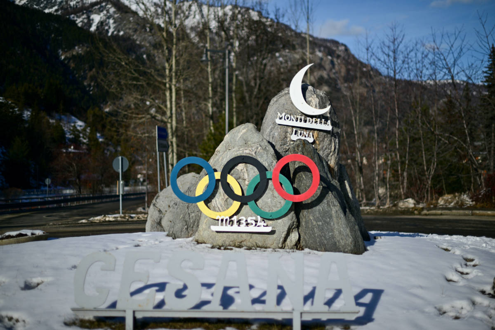
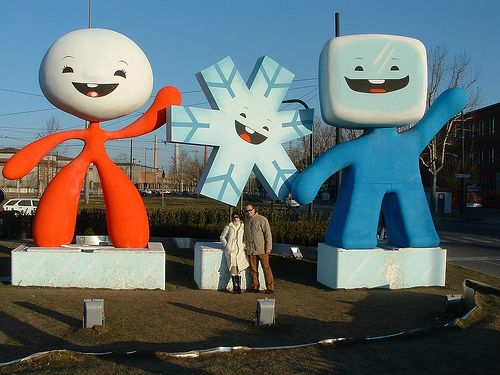
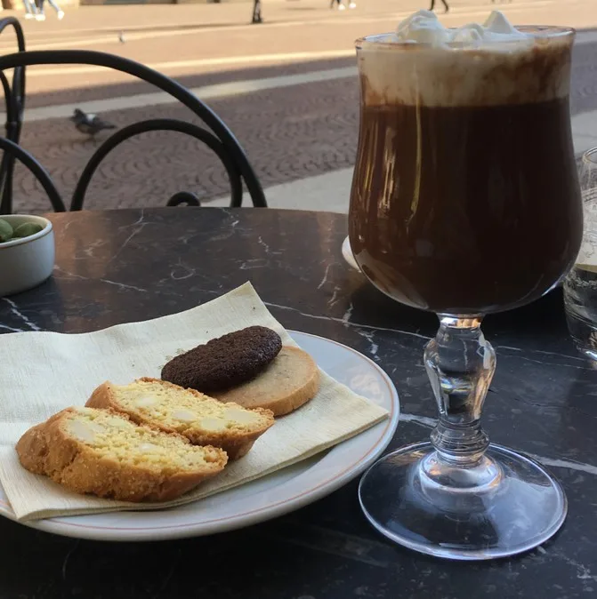

はじめまして！私の基本プロフィールをご紹介します。
私の出身地は、イタリア北部に位置する美しい都市トリノ（Turin）です。
美味しいチョコレートと上質なワインの産地として世界的に有名で、日本では2006年の冬季オリンピック（トリノオリンピック）が開催された場所として知られているかもしれません。アルプスの山々に近く、自然と歴史が調和した素晴らしい街です。


↑ トリノの美しい風景とシンボルの塔
もしトリノに行く機会があれば、ぜひ体験してほしい「おすすめトップ3」をご紹介します！

私は非常に好奇心旺盛で、人生において「自分が夢中になれる新しいものを見つけること」に何よりの喜びを感じます。食わず嫌いをしたり、試す前に物事を否定したりすることは決してしません。まずは自分で挑戦し、その経験から学ぶことをモットーとしています。
休日は、Nintendo Switchなどのビデオゲームから、友人と囲むボードゲームまで、ゲーム全般を幅広く楽しんでいます。また、アニメや映画の世界に没頭して新しい物語に出会う時間も大好きです。
そして、私の性格を一言で表すと「超・社交的」です！
人と話すこと、新しい人と出会うことが大好きで、グループでの活動やチームワークをとても大切にしています。ジョークやギャグを言って周りの人を笑顔にしたり、その場の空気を明るく盛り上げたりするのが得意です。日本での生活や今後の学生生活でも、この持ち前の明るさと好奇心を活かして、周囲の方々と積極的に関わり、たくさんの新しいことを吸収していきたいと考えています。
どうぞよろしくお願いいたします！